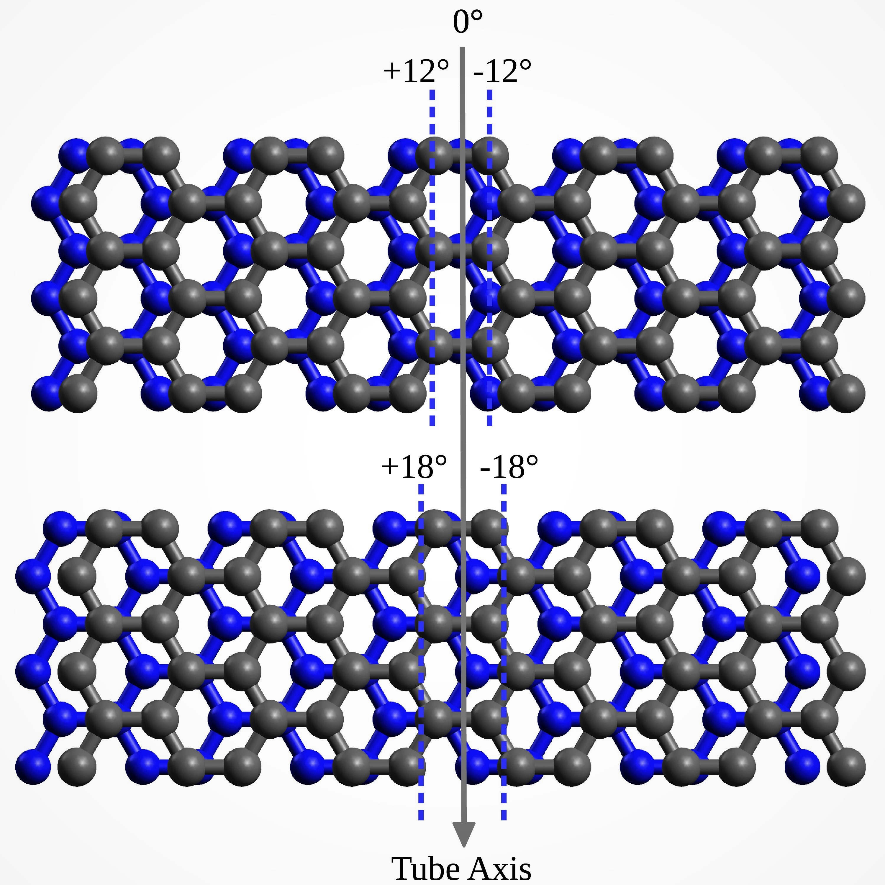
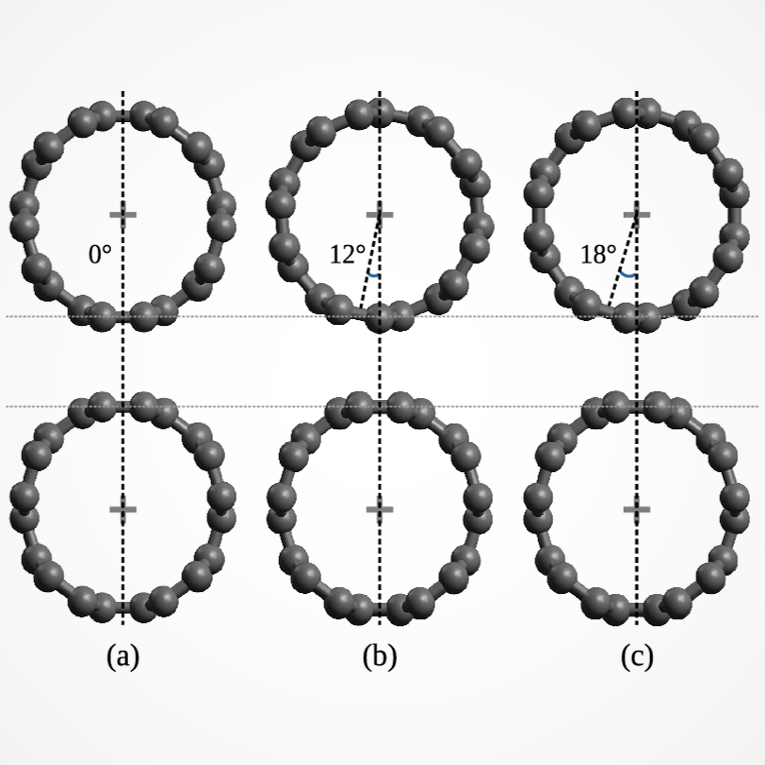
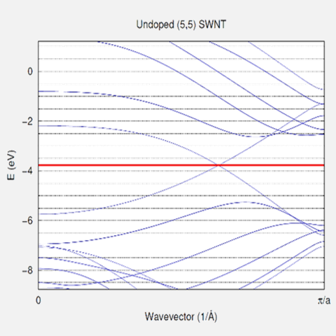
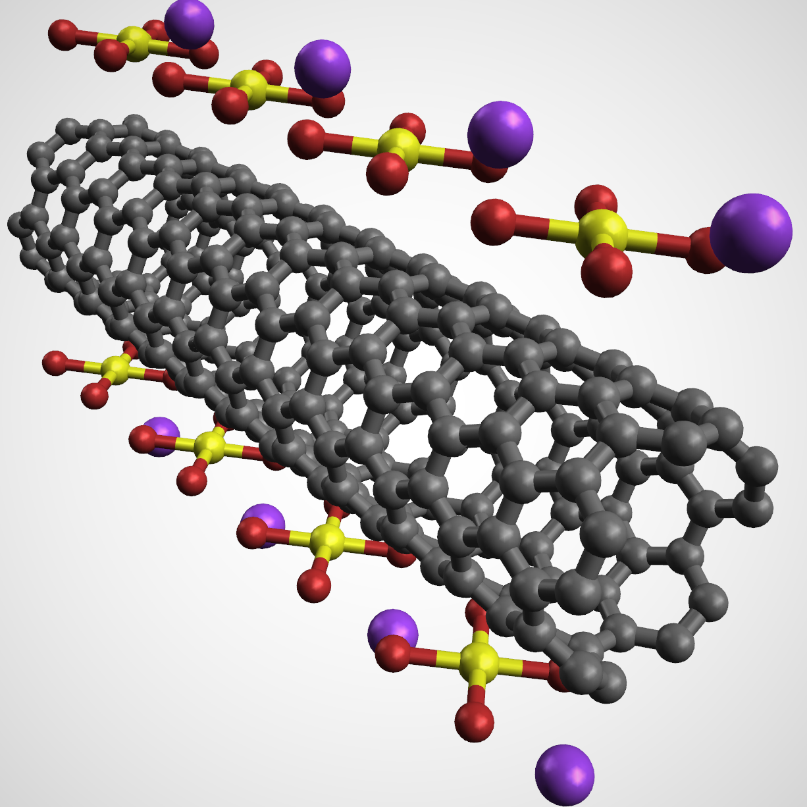

University of Texas at Austin
Graduate Research Assistant
During my master's degree, I worked with Dr. Eric Fahrenthold from the Mechnical Engineering Department on the investigation of doped carbon nanotube models as part of a basic research project funded by the Office of Naval Research (ONR). Currently, the research has been completed and results are being compiled for submission to journals while my master's thesis is available publicly on the UT Electronic Theses and Dissertations website .
Background
Carbon nanotubes are tube-like structures formed by carbon atoms. Like diamond and graphite, carbon nanotubes are allotropes of carbon. In my research, I focused on single-walled carbon nanotubes, which can be visualized as having a sheet of carbon atoms (also called graphene — a single layer of graphite) rolled up into a tube. Carbon possesses great potential in the development of electronic devices, due to its unique electronic properties (which can be observed when organized into a specific configuration like carbon nanotubes and graphene), much like its fellow group 14 member element: silicon.
My Work and Experience
   The objective of my research was to investigate the electronic characteristics of doped carbon nanotubes. In particular, we were interested in observing improvements in conductance of the carbon nanotubes (on both the micro and macro level) when different dopants at different configurations are physisorped to the nanotubes. Due to its unique mechanical and electronic properties, studies have shown that carbon nanotubes display great potential as replacement for materials in the electronic devices industry, from flexible electronics to display technologies.
For my research, I generate computational models of carbon nanotubes for simulation using the SIESTA 4.0 package: SIESTA (Spanish Initiative for Electronic Simulations with Thousands of Atoms) is a self-consistent density functional theory (DFT) open source software that uses a basis set based on the linear combinations of atomic orbitals (LCAO). I created the desired geometry of the atoms to generate carbon nanotube models — usually with dopants — and perform structural relaxation of the models using the supercomputer resources provided by the Texas Advanced Computing Center (TACC).
Next, electronic transport calculations were performed for the relaxed models (once they passsed a structural feasibility check) using a module within the SIESTA package. Through evaluation of the calculation results the potential of the doped nanotube in fabricating conductive material can be determined. This information provides some evidence and intuition for experimental researchers when deciding to experiment with fabricating nanowires using doped carbon nanotubes.
Prior to working as a graduate research assistant, I had little to no experience in quantum mechanics. My graduate school education in quantum mechanical modeling was thus very exciting, as I discovered the peculiar (and oftentimes unintuitive) behavior of subatomic particles. Throughout my research of doped carbon nanotubes, my knowledge on carbon nanoscale devices has improved, and my knowledge of solid-state physics has improved as well. I also enhanced my ability in writing technical documentation as well as interpreting scientific literature.